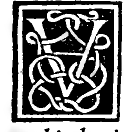

CAPITEL XII¶
Von der Anordnung der runden Säulen, wie sie bei den Ge- bäuden mit ihrer Basis festgestellt werden müssen.

Nachdem zu eurer Genüge gesehen und besprochen, wie in der Sculptur die runden Säulen unter euern Händen mit euern Instrumenten anzuordnen seien, so werden wir jetzt für diejenigen, welche sie ins Werk zu setzen haben werden, hier im Verfolg den antiken und neuerdings gebräuchlichen Modus angeben. Die Alten pflegten, sie nach dem Richtloth zu richten, die eine von der andern nur um eine Dicke entfernt und solcher sind in Athen und Alexandria in Aegypten durch die, welche dort gewesen, gefunden worden. Sie pflegten sie auch noch in gleichen Abständen von anderthalb ihrer Dicken aufzustellen, wovon sich sehr viel in Rom findet. Andere sind um zwei ihrer Dicken auseinandergestellt; andere um zwei und eine halbe.
Alle diese sind nun von unserm Vitrav je nach ihrer Stärke empfohlen worden. Und zur Schönheit empfiehlt er mehr das Mass von zwei Dicken und weit mehr von zwei und einhalb, abgesehen davon, dass die Vernunft sagt, dass je grösser ihr Abstand, sie um so schwächer seien. Aber der würdige Architekt muss, bevor er sie anordnet, zuerst das Gewicht erwägen, was sie mit ilirem Epistyl und Krönung, Tygraphen,i) undDach auszuhalten haben. Daher empfiehlt er, wenn das Gewicht nicht enorm ist, jene sehr, deren Tetrant zwei und eine halbe Dicke beträgt der Schönheit wegen.
Merket euch darum zum Verständniss bezüglich dieses Ausdruckes Tetrant, dass man darunter stets jeden Raum versteht, der einem Quadrate zustrebt, da er nur von den äquidistanten Linien gebildet wird. Dies sage ich, weil wir oben Tetrant den Raum oder das Intervall genannt haben, welcher sich zwischen einer und der andern Ecke des Capitells befindet. Und es werden ferner noch Tetranten die Räume oder Intervalle genannt, die zwischen den gerichteten Säulen sich befinden, welche Vitruv Intercolumnien zu nennen pflegt u. s. f. Und gleicherweise versteht sich dasselbe von den Räumen und Intervallen zwischen dem einen Tygraphen und dem andern, was ihr, da ich unmittelbar unten vom Epistyl zu sprechen im Begriff bin, verstehen werdet.
Jetzt sage ich mit Bezug auf unsere Zwecke: dass Vitruv solche Intervalle empfehle, vorausgesetzt dass von den Architekten wie gesagt, das Gewicht wohl erwogen, wovon man nicht mit der Feder vollständig Kenntniss geben kann, davon zu schweigen, dass der, welcher sich in der Praxis befindet, sie in Folge seines Betriebs im Proportioniren besitzen muss, was alles Vitruv in dem folgenden Citat deutlich macht. Denn, wie Vitruv sagt, der Architekt muss gleich Anfangs sehr achtsam sein bei der Beobachtung von Orten, Abständen und Gewichten hinsichtlich des Gebäudes, sofern nicht an jedem Orte immer die Symmetrien und Proportionen in Folge der Enge der Oerter und anderer Hindernisse bewahrt werden können. Deswegen sind Viele gezwungen, sie anders anzulegen als nach seinem Wunsche.
Und darum ist es Sache, so viel man kann, sich ans Viereckige oder Runde und seine auf irgend welche Art bekannte Theile zu halten, wenn es in Zahlen mögHch, wenigstens möge es nicht in Linien(maassen) fehlen, was er Alles in diesem goldenen Ausspruch im fünften Buche schiiesst der wörtlich hergesetzt, nämlich: „Jedoch sind nicht bei allen Theatern die Ebenmasse zu allen Verhältnissen und zu allen Wirkungen vermögend, sondern der Architekt muss wahrnehmen, aus welchen Gründen es nothwendig sei, der Symmetrie zu folgen und nach welchen Proportionen der Natur oder Grösse des Werkes gemäss sie zu bemessen sei: Denn es gibt Dinge, die in kleinen wie in grossen Theatern wegen ihres Gebrauchs nothwendig von derselben Grösse hergestellt werden müssen, wie die Stufen, die Abtheilungen der Sitze, Schutzdächer, Durchgänge?
Aufzüge, Bühnengerüste, Tribünen und was anderes sonst noch vorkommt; wodurch die Nothwendigkeit zwingt, von der Symmetrie abzuweichen, damit die Benutzung nicht gehindert werde, nicht weniger, wenn irgend eine Kleinigkeit an Vorrath, d. h. Marmorstotf und der übrigen Gegenstände, welche beim Werke angeordnet werden, fehlte, ein wenig fortzunehmen oder hinzuzusetzen, wenn es nur nicht zu übermässig geschieht. Aber es darf nicht der Harmonie ermangeln. Dies aber wird der Fall sein, wenn der Architekt in der Praxis erfahren, ausserdem edlen Talentes und Betriebsamkeit nicht ermangelt u. s. f.
Er schliesst kurz gesagt, dass ausser der Kunst der gute Architekt Talent besitzen muss, das Verringerte zu ergänzen, und das Ueberflüssige zu vermindern Je nach der Gelegenheit und Anlage der Orte, damit ihre Gebäude nicht monströs erscheinen. Und zu diesem Zwecke habe ich mich für euch und manchen Andern angeschickt, bei grossen Anstrengungen und langen Nachtwachen, die Formen von allen fünf regulären Körpern nebst andern von ihnen abhängigen zu finden, und nachdem dieselben in diesem unsern Werke zugleich mit ihren Kanon aufgestellt, überdies noch solche mit ihrem richtigen Verhältniss auszuführen, damit wenn ihr darin studirt, ich sicher bin, dass ihr sie euren Zwecken werdet anzupassen wissen.
Und auch die übrigen Mechaniker und Gelehrten werden daraus nicht wenig Nutzen ziehen, mögen sie welchen Künsten, Geschäften und Wissenschaften es auch sei ergeben sein, wie es in seinem Timäus der göttliche Philosoph Plato bekundet.